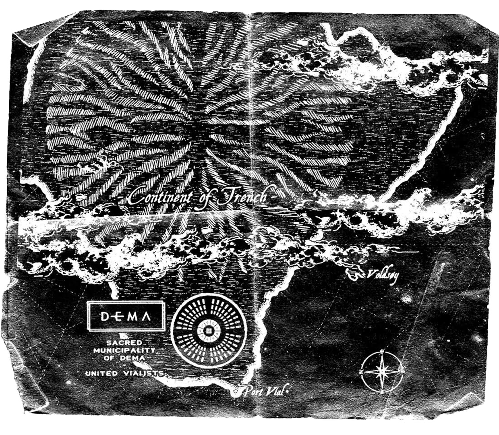

Spotify
Spotify
 Apple Music
Apple Music
BIENVENIDOS A TRENCH
La ciudad de Dema
Dema es una ciudad ficticia amurallada y circular que sirve como escenario principal de la narrativa de toda la historia. Metafóricamente, representa una prisión mental, la depresión severa y el conformismo religioso o social que atrapa al individuo.
Puntos clave:
- El Gobierno (Los Obispos): La ciudad está gobernada por nueve obispos autoritarios (liderados por Nico, quien es la encarnación física de Blurryface). Ellos vigilan la ciudad desde nueve torres altas y prohíben la salida.
- La Religión (El Vialismo): Los habitantes de Dema son adoctrinados en el "Vialismo". Es un culto que adora las luces de neón (luz artificial) y glorifica el suicidio como una forma noble de trascendencia ("The Glorious Gone"). Los obispos manipulan a la gente para que crean que acabar con su vida es el honor más alto.
Aquí tenemos un mapa de Dema. Es normal si te resulta familiar, los nueve círculos que vemos en el centro de la ciudad son en realidad nueve torres, y cada una pertecece a un obispo diferente. De hecho, si hacemos zoom en la imagen veremos los nombres de los obispos de Dema que vimos anteriormente en las canciones de Blurryface.
Trench
Si salimos de Dema por la única salida que hay en el este, llegaremos a Trench. Trench és un continente vasto y verde plagado de naturaleza. Representa el terreno peligroso que existe entre la depresión (Dema) y la libertad.
Los Banditos
Son el grupo de personas que han escapado de Dema y viven en la zona exterior conocida como Trench. En Dema son considerados terroristas y rebeldes.
- Misión - Su objetivo es resistir el control de los Obispos de Dema (los villanos que encarnan la ansiedad y las fuerzas negativas, siendo Nico el principal) y ayudar a otros.
- Simbolismo - Su color distintivo es el amarillo, que es un color que los Obispos supuestamente no pueden ver. A menudo se les representa usando elementos de este color o sosteniendo antorchas. El símbolo ||-// es también un emblema Bandito.
- Liderazgo - El personaje de Josh Dun (El Portador de la Antorcha, o "Torchbearer") es considerado su líder o una figura clave que guía a los demás.

Jumpsuit
Seguimos con la narrativa mediante videoclips. En Trench veremos Jumpsuit, Nico And The Niners y Levitate.
- La conexión directa - El video arranca con Tyler de pie sobre un coche quemado en un barranco. Este es el mismo coche que fue destruido al final del videoclip de Heavydirtysoul. Este acto simboliza un nuevo escape de Dema por parte de Clancy.
- El despertar - Tyler se despierta en el fondo de un barranco, vistiendo un mono (Jumpsuit), y mira a su alrededor, diciendo: "Hemos estado aquí todo el tiempo. Estabas dormido. Es hora de despertar".
- La persecución y Nico - Tyler comienza a correr a través del desolado paisaje de Trench. Es perseguido por una figura vestida de rojo a caballo: Nico.
- El control - Nico finalmente alcanza a Tyler. El Obispo coloca su mano sobre la nuca de Tyler, lo que deja una mancha negra en su cuello (un proceso llamado smearing) y lo deja en un estado catatónico.
- La ayuda de los Banditos - Mientras Nico lo arrastra, se ven figuras en lo alto de los acantilados, los Banditos, los rebeldes que visten de amarillo. Los Banditos arrojan pétalos amarillos al aire para distraer a Nico. Este es el primer acto de rebelión visible de los Banditos para ayudar a Clancy.
- La recaptura - A pesar de la distracción de los Banditos, Nico logra capturar a Tyler, llevandolo a rastras de vuelta a Dema. Ahora Clancy es un "Failed Perimeter Escape (FPE)", es decir, un rebelde que ha fallado al escapar.
Nico And The Niners
Después de los eventos de Jumpsuit, Clacny se encuentra en Dema, preparando su próximo escape.
- Preparación en Dema - El video comienza mostrando la opresiva ciudad. Tyler está en su habitación realizando preparativos para irse, guardando una flor amarilla y poniéndose una chaqueta con franjas amarillas. Estas escenas se mezclan con tomas de las nueve figuras vestidas de rojo (los Obispos) que parecen estar realizando un ritual vialista en una cámara subterránea fabricando una tumba de neón (Neon Gravestones).
- El Encuentro y la Convocatoria - Tyler sale a las calles desoladas de Dema y se encuentra con Torchbearer. Josh está cubierto con una tela, y ambos realizan su característico saludo con la mano. Una vez reunidos, se dirigen a una plaza donde se congrega un gran número de personas, todas vestidas con toques de amarillo (los Banditos).
- El Escape - El gran grupo de rebeldes, junto a Tyler y Josh, comienza a caminar. Salen de la plaza y desaparecen juntos en un sistema de túneles o pasadizos subterráneos, logrando así salir de la ciudad amurallada de Dema.
- La Reaparición de los Obispos - La escena final muestra las calles de Dema ahora completamente vacías. Dos niños en la calle encuentran la gorra abandonada de Josh. Inmediatamente después, levantan la vista y son confrontados por la repentina aparición de los nueve Obispos que caminan directamente hacia ellos. Nico se da cuenta de que Clancy ha vuelto a escapar.
Levitate
Después de escapar de Dema, Tyler se encuentra en Trench.
- La Llegada al Campamento - El video comienza mostrando a Tyler emergiendo del túnel que usó para escapar de Dema, visiblemente agotado. Poco después, llega a un gran campamento al aire libre, un refugio improvisado donde viven los Banditos.
- La Ceremonia de Bienvenida - Los Banditos, todos vistiendo elementos amarillos, reciben a Clancy con vítores y un ambiente de celebración. Torchbearer está allí, tocando la batería con entusiasmo. Ahora Clancy es un Bandito.
- La Infiltración y la Captura - Hacia el final del video, la atmósfera cambia abruptamente. Mientras Tyler canta, es distraído por algo fuera de cámara. Justo en ese momento, una figura misteriosa aparece repentinamente detrás de él y lo agarra, tirándolo al suelo. La figura resulta ser Nico. Tyler es capturado y arrastrado brutalmente fuera del campamento, completando el ciclo de escape y recaptura de la era Trench.
Las cartas de Clancy
Aunque no lo creas, todavía hay más lore de la era Trench que falta por cubrir. Puesto a que el material es muy extenso podrás encontrar aquí todas las cartas de Clancy, que dan todavía mas contexto sobre la historia de Twenty One Pilots.